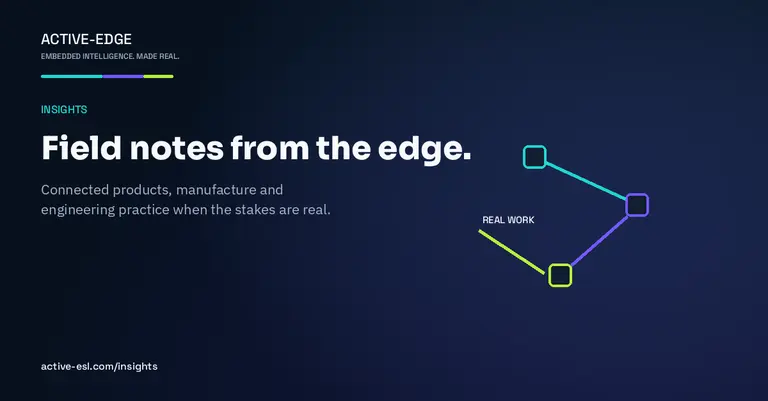

Zephyr quality needs a vendor budget line.
Silicon vendors who push Zephyr must fund maintainer and driver-quality capacity - not just the marketing slide.
Read the noteInsights
Practical writing from Active-Edge on connected products, manufacture, and how we work with AI agents when the stakes are real.

Silicon vendors who push Zephyr must fund maintainer and driver-quality capacity - not just the marketing slide.
Read the noteI don’t like the “AI harness” metaphor. What a working relationship with agents has looked like on real product and lab work.
Read the noteA custom industrial gateway demonstrates what reusable board, Linux and container platform work buys at first bring-up.
Read the noteRemote boards, controlled power, networked instruments and OTA delivery for a distributed engineering team.
Read the noteFive-year battery ambition, secure lifecycle support and AI-assisted remote bring-up on an i.MX93 display platform.
Read the note